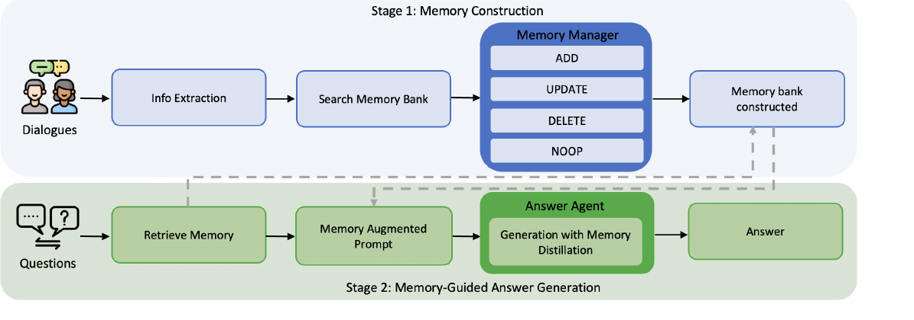

Memory-R1 深度解读
Memory-R1 把外部记忆系统拆成两个可训练 agent：Memory Manager 学习维护 memory bank，Answer Agent 学习从检索记忆中蒸馏真正有用的证据。它的目标是用 outcome-driven RL 替代静态启发式记忆规则。
1. 设计思路：让记忆系统的“写”和“用”都可学习
Memory-R1 指出，外部记忆系统里的两个关键决策经常被 prompt 规则硬编码：新信息怎么写进库，以及回答时用哪几条检索记忆。论文把这两个决策分别交给 Memory Manager 和 Answer Agent，并用 RL 根据下游 QA 结果训练。
管理动作
ADD、UPDATE、DELETE、NOOP 覆盖最常见的记忆生命周期。
可训练 agent
Manager 管库，Answer Agent 使用库，避免一个模型同时承担所有职责。
训练 QA pairs
论文称使用 152 个 QA pairs 即可带来跨 benchmark 的泛化收益。
2. 论文原图框架：Figure 2 的双阶段系统

论文 Figure 2：Stage 1 用 RL-fine-tuned Memory Manager 构造和更新 memory bank；Stage 2 用 Answer Agent 从检索记忆中蒸馏相关证据并回答。
3. Memory Manager：把 CRUD 变成策略学习
Manager 的状态可以理解为 \(s=(x, M_{old})\)：当前抽取的新信息 x 和旧 memory bank。策略输出操作 \(o\) 和更新内容 \(m'\)。
(o, m') ~ pi_theta(. | x, M_old)| 操作 | 语义 | 典型风险 |
|---|---|---|
| ADD | 新事实或新偏好进入 memory bank。 | 过度 ADD 会造成冗余和噪声污染。 |
| UPDATE | 把补充信息合并到已有记忆。 | 如果合并错对象，会覆盖正确旧事实。 |
| DELETE | 删除过期或错误记忆。 | 静态规则容易把补充事实误删。 |
| NOOP | 当前信息不值得改变记忆。 | 太保守会漏掉长期有用事实。 |
4. Answer Agent：检索之后还要蒸馏
对每个问题，从 temporal memory bank 中召回一组候选记忆。论文描述 Answer Agent 数据构造时使用 60 条 candidate memories。
Answer Agent 不直接使用所有候选，而是学习挑出与当前问题真正相关的条目。
生成答案与 gold answer 的 EM 作为 reward，使“用什么记忆”由最终回答正确性塑造。
论文比较 Base、Base+Reranker 与 Memory-R1，指出 Answer Agent 在准确率和延迟之间更有优势。
5. 实验怎么读：RL 超过静态记忆规则
| 结果 | 论文报告 | 含义 |
|---|---|---|
| LoCoMo / LLaMA | Memory-R1-GRPO Overall F1 / B1 / J = 45.02 / 37.51 / 62.74。 | 相比 RAG、A-Mem、Mem0、MemoryOS、Memory-SFT 等基线，RL 策略带来明显收益。 |
| LoCoMo / Qwen | Memory-R1-GRPO Overall F1 / B1 / J = 43.14 / 36.44 / 61.51。 | 不同 backbone 下仍成立，说明不是单一模型偶然结果。 |
| 训练规模 | 摘要称只用 152 question-answer pairs。 | 论文强调小量任务反馈即可塑造记忆操作策略，但这不等于任意新领域都只需 152 条。 |
| 泛化 | 论文称在 LoCoMo fine-tune 后 zero-shot 到 MSC 和 LongMemEval 仍有持续改进。 | 学到的是操作和蒸馏策略，而不只是 LoCoMo 模板。 |
6. 工程启发与边界
适用
已有外部 memory bank，但更新规则和检索使用策略不稳定的对话 agent、个人助理或长期任务系统。
边界
论文没有解决用户可见编辑、回滚、敏感记忆审批、跨设备身份一致性等产品层问题。
来源与核验边界
本页依据 arXiv:2508.19828 与可访问 GitHub 仓库整理。用户此前提供的 zhiyuanhubj/Memory-R1 链接不可访问，本页继续使用论文关联且可访问的 yansikuan/Memory-R1 仓库。